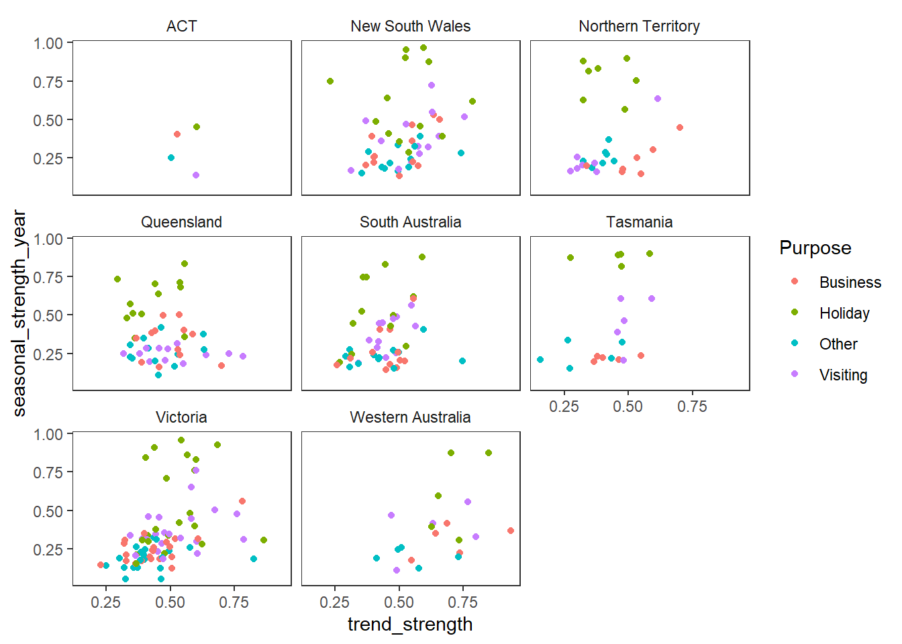
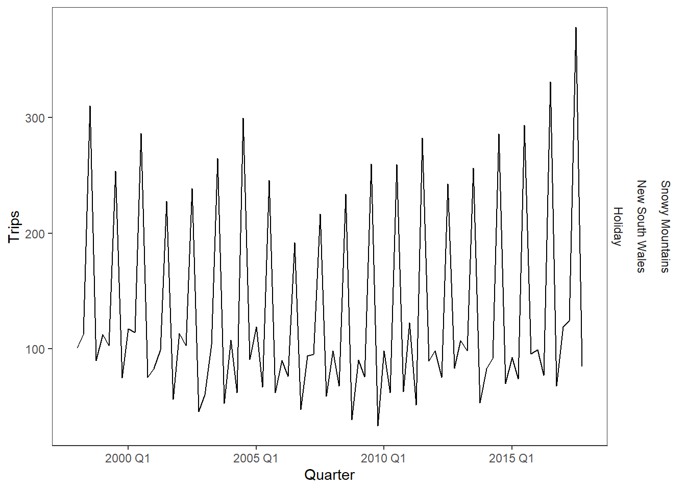

# --- Time series features ---
library(fpp3)
library(tidyverse)
theme_set(theme_bw() +
theme(panel.grid.minor = element_blank(),
panel.grid.major = element_blank(),
strip.background = element_rect(fill ="white",
color = "transparent")))
# -- Features: mean --
tourism %>%
features(Trips, list(mean = mean)) %>%
arrange(mean)# A tibble: 304 × 4
Region State Purpose mean
<chr> <chr> <chr> <dbl>
1 Kangaroo Island South Australia Other 0.340
2 MacDonnell Northern Territory Other 0.449
3 Wilderness West Tasmania Other 0.478
4 Barkly Northern Territory Other 0.632
5 Clare Valley South Australia Other 0.898
6 Barossa South Australia Other 1.02
7 Kakadu Arnhem Northern Territory Other 1.04
8 Lasseter Northern Territory Other 1.14
9 Wimmera Victoria Other 1.15
10 MacDonnell Northern Territory Visiting 1.18
# … with 294 more rows# -- Features: mean, sd, 2.5 and 97.5 percentiles --
tourism %>%
features(Trips, list(mean = mean,
sd = sd,
p = ~quantile(., probs = c(0.025, 0.975)))) %>%
arrange(desc(sd))# A tibble: 304 × 7
Region State Purpose mean sd p_2.5…¹ p_97.…²
<chr> <chr> <chr> <dbl> <dbl> <dbl> <dbl>
1 South Coast New South Wales Holiday 495. 170. 285. 812.
2 North Coast NSW New South Wales Holiday 588. 117. 404. 815.
3 Sydney New South Wales Business 602. 117. 402. 884.
4 Great Ocean Road Victoria Holiday 281. 116. 135. 545.
5 Melbourne Victoria Holiday 507. 103. 354. 736.
6 Peninsula Victoria Holiday 185. 96.7 70.8 458.
7 Australia's South West Western Australia Holiday 309. 95.3 179. 541.
8 Melbourne Victoria Visiting 619. 93.6 472. 807.
9 Brisbane Queensland Visiting 493. 90.6 344. 663.
10 Sydney New South Wales Visiting 747. 89.6 564. 916.
# … with 294 more rows, and abbreviated variable names ¹`p_2.5%`, ²`p_97.5%`# -- dplyr equivalent: --
tourism %>%
as_tibble() %>%
group_by(Region,State,Purpose) %>%
summarize(mean = mean(Trips)) %>%
arrange(mean)# A tibble: 304 × 4
# Groups: Region, State [76]
Region State Purpose mean
<chr> <chr> <chr> <dbl>
1 Kangaroo Island South Australia Other 0.340
2 MacDonnell Northern Territory Other 0.449
3 Wilderness West Tasmania Other 0.478
4 Barkly Northern Territory Other 0.632
5 Clare Valley South Australia Other 0.898
6 Barossa South Australia Other 1.02
7 Kakadu Arnhem Northern Territory Other 1.04
8 Lasseter Northern Territory Other 1.14
9 Wimmera Victoria Other 1.15
10 MacDonnell Northern Territory Visiting 1.18
# … with 294 more rows# -- ACF features --
tourism %>%
features(Trips, feat_acf) # A tibble: 304 × 10
Region State Purpose acf1 acf10 diff1…¹ diff1…² diff2…³ diff2…⁴ seaso…⁵
<chr> <chr> <chr> <dbl> <dbl> <dbl> <dbl> <dbl> <dbl> <dbl>
1 Adelaide Sout… Busine… 0.0333 0.131 -0.520 0.463 -0.676 0.741 0.201
2 Adelaide Sout… Holiday 0.0456 0.372 -0.343 0.614 -0.487 0.558 0.351
3 Adelaide Sout… Other 0.517 1.15 -0.409 0.383 -0.675 0.792 0.342
4 Adelaide Sout… Visiti… 0.0684 0.294 -0.394 0.452 -0.518 0.447 0.345
5 Adelaid… Sout… Busine… 0.0709 0.134 -0.580 0.415 -0.750 0.746 -0.0628
6 Adelaid… Sout… Holiday 0.131 0.313 -0.536 0.500 -0.716 0.906 0.208
7 Adelaid… Sout… Other 0.261 0.330 -0.253 0.317 -0.457 0.392 0.0745
8 Adelaid… Sout… Visiti… 0.139 0.117 -0.472 0.239 -0.626 0.408 0.170
9 Alice S… Nort… Busine… 0.217 0.367 -0.500 0.381 -0.658 0.587 0.315
10 Alice S… Nort… Holiday -0.00660 2.11 -0.153 2.11 -0.274 1.55 0.729
# … with 294 more rows, and abbreviated variable names ¹diff1_acf1,
# ²diff1_acf10, ³diff2_acf1, ⁴diff2_acf10, ⁵season_acf1# -- STL features --
tourism %>%
features(Trips, feat_stl) %>%
ggplot(aes(x = trend_strength, y=seasonal_strength_year,
color = Purpose)) +
geom_point() +
facet_wrap(vars(State))
# -- Time series with strongest seasonal component: --
tourism %>%
features(Trips, feat_stl) %>%
filter(
seasonal_strength_year == max(seasonal_strength_year)
) %>%
left_join(tourism, by = c("Region","State","Purpose")) %>%
ggplot(aes(x=Quarter, y = Trips)) + geom_line() +
facet_grid(vars(Region,State,Purpose))